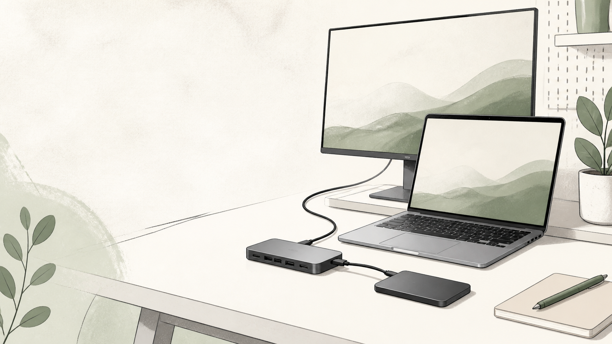

MAC PERIPHERALS / DESK SETUP
UGREEN Revodok 6-in-1をSSD用に選ぶ前に。10Gbpsの数字で見落とす条件
広告：本ページにはAmazonアソシエイトリンクが含まれます。商品情報は公式情報とAmazon掲載情報を確認して作成しています。実機での検証結果ではありません。

UGREEN Revodok 6-in-1のHDMIモデルを、外付けSSDの接続を中心に検討。10Gbpsという規格上限と実測の違い、ケーブル・同時接続・取り外し手順から購入判断を整理します。スペックの多さではなく、先に用途と設置条件を決めてから判断します。
10Gbpsという表示から分かること・分からないこと
写真や動画の素材を外付けSSDへ置くなら、ハブの購入理由は「USB端子を増やす」よりも「必要な転送経路を確保する」に変わります。UGREEN Revodok 6-in-1はその候補ですが、10Gbpsと書かれているだけで、いま待っている作業が必ず短くなるわけではありません。
今回扱うのは、UGREEN公式ページの製品型番45363に対応するHDMIモデルです。メーカーのAmazon購入リンクが指すASIN B0D1XLNWP2をCreators APIで照合しています。同名に近いDP出力モデルとは分けて検討してください。以下は公式情報を起点にした購入判断であり、実機の速度・温度・相性を測定したレビューではありません。
公式ページではデータ用USB-A／USB-Cの最大10Gbps、HDMIの最大4K/60Hz、PDパススルー充電を案内しています。特に「10Gbps」と表示されたUSB-Cはデータ用で、映像や充電には対応しないと説明されています。詳しくはUGREEN公式の商品説明を参照してください。
規格上限を、そのままSSDの実測値と読まない
商品説明の最大転送速度は、購入候補を絞る材料です。しかし、特定のSSDを特定のMacにつないだときに、その数字で読み書きできるという保証ではありません。ハブだけではなく、Mac側、SSD側、接続ケーブルの仕様まで並べて確認する必要があります。
たとえば、現在のSSDをMacへ直接つないでも期待する作業時間になっていないなら、先にその経路で困っている理由を整理します。ハブへの買い替えは、SSD自体や作業内容の制約を自動的に取り除く手段ではありません。「端子不足」と「転送待ち」は別の問題として扱うと、買い足す物を減らせます。
どの待ち時間を減らしたいか、作業名で書く
「写真が遅い」だけでなく、「撮影データをSSDへコピーする」「SSD上の素材をアプリで開く」「編集結果を書き出す」のどれで待つのかを書き出してください。ファイルを移す時間と、アプリの処理を待つ時間を混ぜると、ハブの仕様と解決したい問題の対応が曖昧になります。これからSSDを買う人も、先にこの作業名を決めると選定条件を作りやすくなります。
SSD中心の構成を、単体と同時接続で分ける
まずSSDだけの経路を決める
購入前のメモは「Mac → ハブ → SSD」と矢印で書くだけでも十分です。矢印ごとに、使う端子とケーブルを追記します。SSDに付属するケーブルを使うのか、手元の別ケーブルを使うのかも区別してください。端子が差さることと、必要なデータ転送規格を満たすことは別です。ケーブルの規格が確認できないなら、ハブより先にその不明点を解消します。
なお、ハブのデータ用USB-Cを使う構成と、Mac本体の端子へSSDを直接つなぐ構成は、両方を比較候補に残して構いません。ハブにすべて集約すること自体を目的にせず、頻繁に使うストレージは直接接続、入力機器と画面はハブという分担も検討できます。
次に、同時に使う物だけを足す
SSDの経路が決まったら、モニター、キーボードのレシーバー、別のストレージなどを足します。ここで重要なのは、接続したままの物と、同時にデータを動かす物を分けることです。端子が空いているからという理由で、想定外の同時利用まで一度に増やすと、問題が起きた際にどの条件が変わったか追いにくくなります。
また、各ポートの表示を足し算して、同時使用時の総転送速度を保証する数字と解釈しないでください。今回の公式説明だけから、手元の全機器を同時使用した際の性能までは確定できません。複数のSSDを同時に使う用途なら、その用途の情報や自分の構成での検証が必要だと明記して比較します。
購入後の確認は、条件を一つずつ増やす
以下は製品の測定結果ではなく、構成を切り分けるための確認案です。大切なデータを消去したり、初期化したりする必要はありません。確認用にはコピーを使い、元データは残してください。
- 同じSSDと同じファイルで、Macへ直接接続する構成を確認する。
- ハブを挟み、ほかのデータ機器を増やさずに確認する。
- 普段使う周辺機器を一つずつ追加し、どの条件で違いが出るか記録する。
- 実際の作業アプリでも、読み込み・保存・取り外しまでの流れを確認する。
比較するたびにファイルやケーブルも変えてしまうと、原因をハブだけに絞れません。「同じ条件を保つ物」と「今回変える物」をメモしておくことが、数字を一つ記録するより役立つ場面もあります。具体的な速度を記事や他人の環境から借りて、自分の構成の実測値として扱わないことも大切です。
コピー中に配線を組み替えない
メーカーは、画面出力やファイル転送中にPD充電器を抜き差ししないよう案内しています。ケーブルを一本にまとめる利便性と、作業中に触らない経路を作ることはセットで考えます。机からMacを持ち出す前に、SSDを使っている作業を終え、OSで取り出し操作を行ってから物理的に外す流れを決めておきましょう。
取り出せないときは、表示を無視して抜くのではなく、使用中のファイルやアプリがないか確認します。取り外し方はOSの案内に従ってください。ハブに複数のストレージをつなぐ場合は、どれを使用中か分かる名前や配置にしておくと、抜く対象を取り違えにくくなります。
向く条件・見送る条件
購入候補として整理しやすい条件
- SSDのデータ接続とHDMI画面の接続をまとめたい。
- SSD・ケーブル・Macの仕様を確認でき、必要な転送規格を説明できる。
- 端子不足の解消が主目的で、手元の機器による確認を行う前提がある。
購入を急がず、別経路も比較したい条件
- 「10Gbps」と書いてあれば、作業全体が必ず高速になると期待している。
- 複数ストレージの同時利用で、一定の実効速度を保証する必要がある。
- SSDやケーブルの仕様が不明で、現在の待ち時間の原因も整理できていない。
- HDMIモデルとDPモデルを、同じ製品として比較している。
この場合は、SSDをMacへ直接接続する構成、必要な機器だけをまとめる構成、別の接続規格を使う構成を比較します。ハブの端子数を増やすことと、ストレージの経路を見直すことのどちらが必要か、先に結論を分けてください。
注文前のチェックリスト
- 目的を「端子不足」か「転送待ち」かで分ける。
- SSD・ケーブル・Macの規格を確認する。
- 同時利用するストレージの数を記録する。
- HDMIモデル、型番45363、ASIN B0D1XLNWP2の対応を確認する。
- 作業中の給電と、終了時の取り外し手順を決める。
商品カードは上記ASINを対象にしています。商品名が似ている別モデルへ切り替わっていないか、注文前に確認してください。関連：Revodokの基本ガイド／端子の役割と給電を整理したAnker 332ガイド。